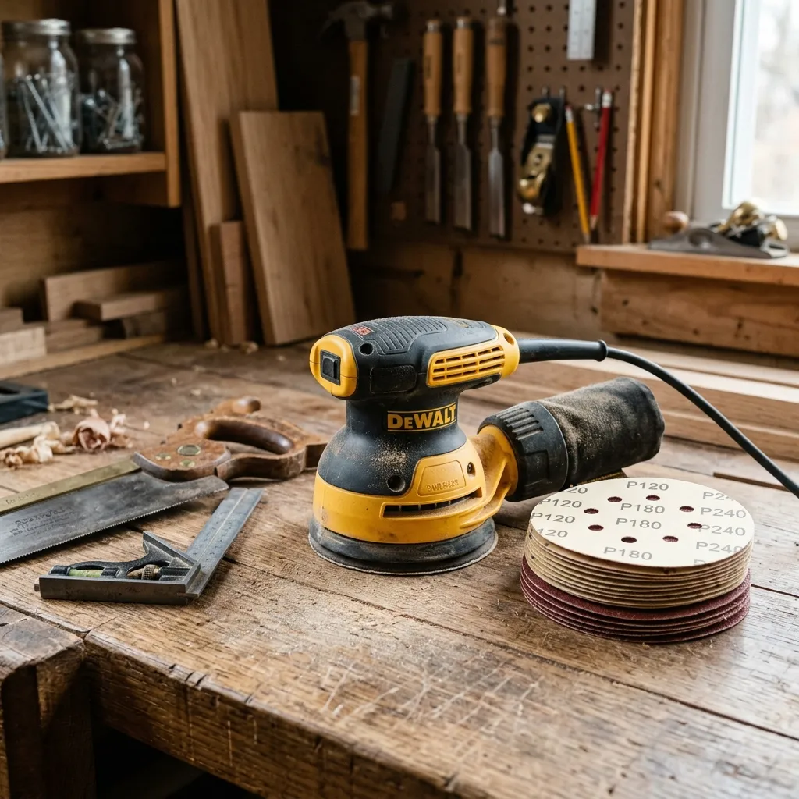
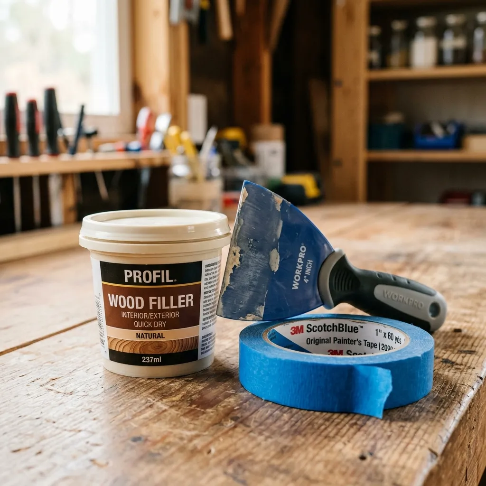
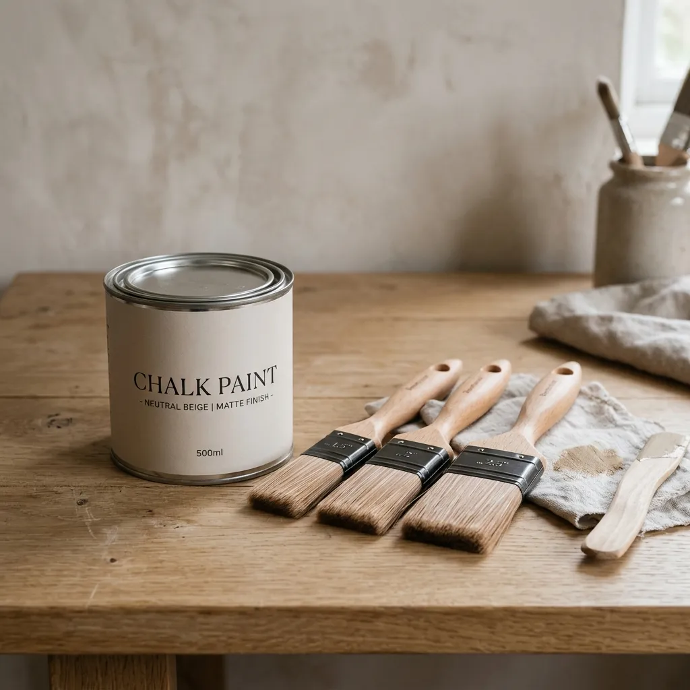
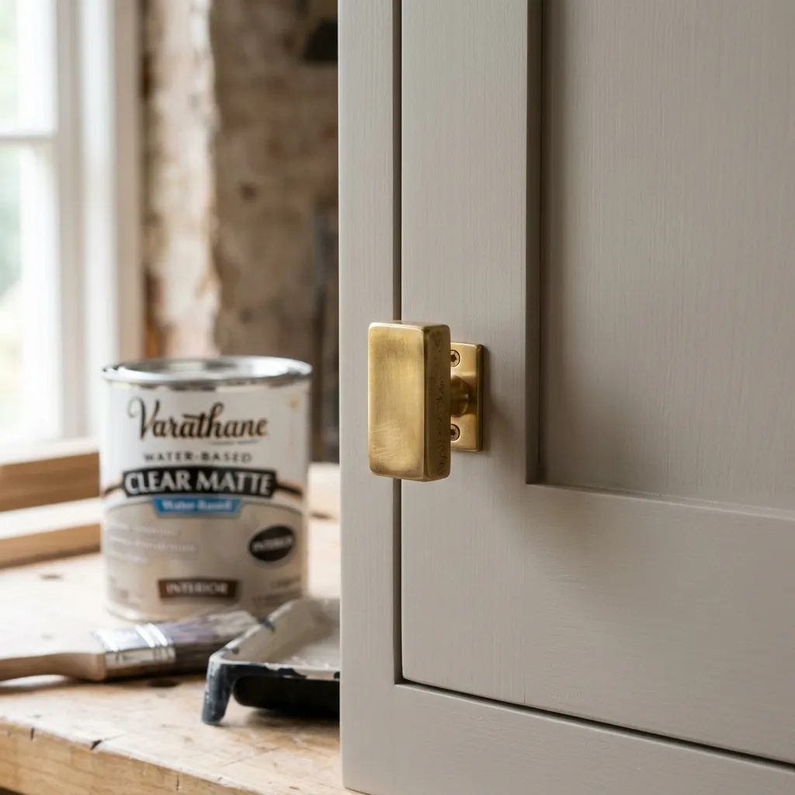

The Ultimate DIY Guide to Upcycling Thrifted Furniture (Modern Minimalist Style)
Learn how to upcycle old, thrifted furniture into stunning modern minimalist pieces. A complete beginner's DIY guide to sanding, painting, and replacing hardware.
Walking into a high-end furniture store and seeing a solid wood dresser priced at $2,000 is enough to make anyone reconsider their living room design. However, walking into a thrift store and seeing an outdated, orange-toned, scratched-up dresser for $40 is where the real magic happens.
Upcycling thrifted furniture is the ultimate interior design hack. Older furniture is often made of solid, high-quality wood that is built to last—something you rarely find in flat-pack modern furniture. With a little bit of elbow grease, the right tools, and a vision, you can transform a cheap, dated piece into a luxurious, modern minimalist focal point.
If you have never flipped a piece of furniture before, it can feel incredibly intimidating. What sandpaper do you use? Do you have to strip the paint? What kind of paint looks high-end?
Don't worry. Here is the ultimate, step-by-step DIY guide to upcycling thrifted furniture like a professional.

Step 1: The Prep (Stripping & Sanding)
The biggest mistake beginners make is rushing straight to the paint. If you paint over old, glossy varnish, the new paint will peel off within a week. You must give the new paint a surface it can grip onto.

Start by removing all the old hardware (knobs and pulls) and taking out the drawers. To remove the shiny top layer of the old finish, you need an orbital sander. Trying to do this by hand will take days and leave you exhausted.
- The Machine: Orbital Sander Variable Speed
Attach a medium grit sandpaper (like 120-grit) to your sander and gently go over the entire piece. You do not need to sand it down to bare wood unless you plan on staining it. If you are painting, you just need to "scuff" the surface so it feels slightly rough to the touch.
Step 2: Repairing the Imperfections
Thrifted furniture has lived a past life. It will have dents, deep scratches, and maybe even holes from hardware you don't plan on reusing. Now is the time to fix them.

Use a high-quality wood filler to patch up any deep gouges or old hardware holes. Apply it slightly higher than the surface of the wood, let it dry completely, and then sand it perfectly flush with your orbital sander.
- The Filler: Wood Filler Paintable Stainable
Before you even think about opening your paint, use a tack cloth to wipe down the entire piece. A tack cloth is a sticky piece of cheesecloth that grabs every single particle of sawdust. If you paint over dust, your finish will feel like sandpaper.
Step 3: The Paint Job (Achieving a Matte Finish)
For a high-end, modern minimalist look, avoid high-gloss paints. Glossy paint highlights every single brush stroke and imperfection in the wood. Instead, opt for a matte chalk paint.

Chalk paint provides a beautiful, velvety matte finish that looks incredibly luxurious. Choose a neutral color—soft greige, warm taupe, or a muted olive green. These colors instantly modernize an old piece of furniture.
- The Paint: Chalk Paint Neutral Colors
When applying the paint, do not use cheap chip brushes. They will leave thick streaks and shed bristles into your wet paint. Invest in a high-quality synthetic bristle brush designed for smooth finishes. Apply thin, even coats, allowing the paint to dry completely between layers. Two to three coats are usually perfect.
Step 4: The Finishing Touches (Hardware & Sealing)
Chalk paint is beautiful, but it is porous. If you do not seal it, it will stain the moment you set a glass of water down on it. To protect your hard work while maintaining that modern matte look, you must apply a clear matte polyurethane top coat.

Brush on two thin coats of the polyurethane, lightly sanding with a very fine grit paper (like 400-grit) between coats for a factory-smooth finish.
The final, and most satisfying step, is adding new hardware. The old, tarnished drawer pulls are what made the piece look dated in the first place. Swap them out for sleek, modern solid brass knobs. The contrast between the matte neutral paint and the warm, shiny brass instantly elevates the piece from "thrift store find" to "designer showroom."
Final Thoughts: Enjoying the Process
Upcycling furniture requires patience. You cannot rush the drying times, and you cannot skip the sanding. But when you place that finished, stunning piece of furniture in your living room and realize you created a $1,000 look for under $100, the effort is entirely worth it.